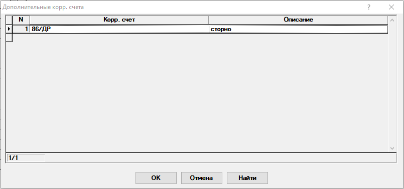

Настройка дополнительных корреспондирующих счетов
Данный диалог предназначен для указания дополнительных корреспондирующих счетов, которые могут быть заданы вручную в проводках операций блока вместе со счетами типа 76/СНТ/Участки/Улица/Участок(/Взнос). В текущий момент данные счета учитываются в бланке Оборотная ведомость.

Рис. 1. Диалог "Настройка доп. корр. счетов"